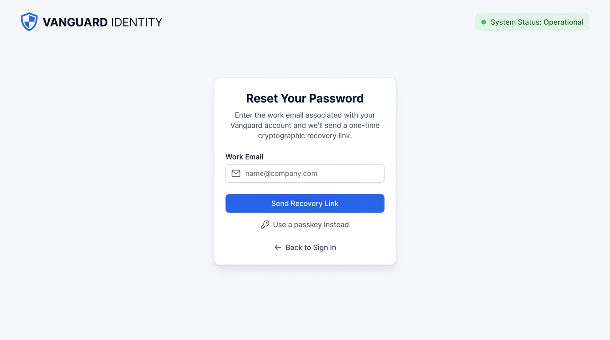
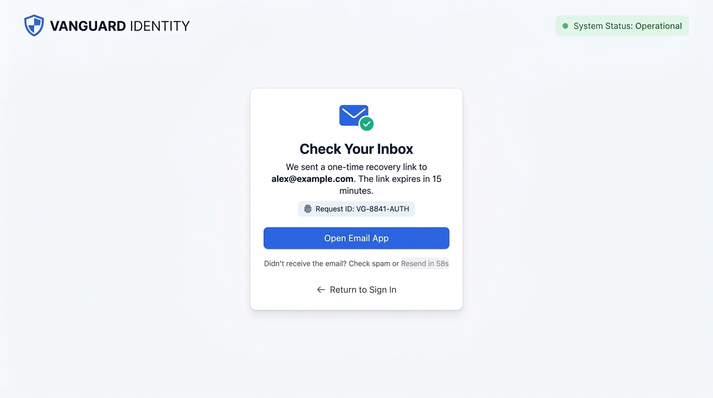
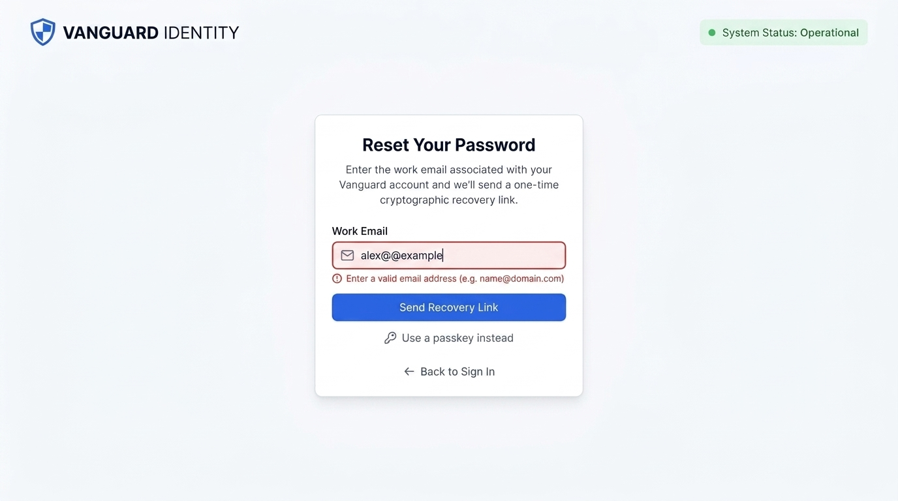

Request a reset link
Board 1: centered form, floating email label and emerald action.

../step1-request.jpg · SHA-256 1a6989fb1979… · open the JPEG.Three unmodified Wave 2 reference boards beside independently rendered, interactive HTML previews. Open each preview at full size to inspect the behavior or tab into an iframe to try it here.
The boards are illustrative, rights-restricted design references, not generated-site captures or evidence of working email, tokens, expiry, or security controls. The preview sends no email, exposes no server route, and must not enter training or evaluation. See board provenance and demo boundaries.
Board 1: centered form, floating email label and emerald action.

../step1-request.jpg · SHA-256 1a6989fb1979… · open the JPEG.Board 2: inbox motif, confirmation layout and illustrative resend countdown. This is a visual state, not a sent message.

../step2-sent.jpg · SHA-256 2ebfcab74be2… · open the JPEG.Board 3 (added by mwg-train-uh0o): the contract's refusal state (plan.md:114) - an empty or malformed address is refused by the field's own constraint before submission, the error announced in text. A state of the field, not a document.

../step3-refusal.jpg · SHA-256 4d937b3ab103… · open the JPEG.board-states.json registers the board as an interaction with no path, so the parity comparator deliberately compares nothing against it by path.